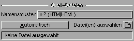
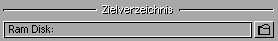
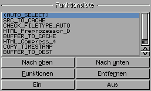

| [Letzte Seite] [Weiter] |
Programm

| Oberfläche | |
|---|---|
| Quell-Dateien: |  Hier können die zu bearbeitende(n) Datei(en) ausgwählt und deren Namensmuster eingegeben werden. Der Button Automatisch nutzt nicht gesetzte Archiv-Bits um die Dateien auszuwählen. Diese werden dann nach der Auswahl gesetzt! D.h. sobald man mit einem Editor eine Datei ändert, wird beim Speichern das Archiv-Bit zurückgesetzt und CompressHTML erkennt daran eine Änderung. Dies ist nur freigegeben wenn das TOOLTYPE SETARCHIV auf ON ist! |
| Zielverzeichnis: |  Hier kann das Zielverzeichnis eingegeben oder ausgewählt werden. Alle dort schon vorhandenen Dateien werden überschrieben! Das Zielverzeichnis darf nicht indentisch mit dem der Quell-Dateien sein. Ist dies trotzdem der Fall, wird die Eingabe ignoriert. |
| Funktionsliste: |  Hier werden die aktuell ausgewählten Funktionen und Plugins angezeigt. Die ausgewählten Dateien, werden mit diesen der Reihe nach bearbeitet. Funktionen in Klammern sind deaktiviert! Beim Bearbeiten steht der Cursor immer auf der aktiven Funktion. Nach oben: Bringt ausgewählte Funktion eine Position nach oben. Nach unten: Dasselbe eine Position nach unten. Funktionen: Damit ruft man ein Fenster zu Funktionsauswahl auf. Entfernen: Die aktuelle Funktion wird damit (nach Rückfrage) aus der Liste entfernt. Ein/Aus: Aktiviert, bzw. deaktiviert die aktuelle Funktion. |
| Statuszeile: | Hier werden allgemeine Informationen ausgegeben. |
| Menü: | |
|---|---|
| Projekt: | Laden: Lädt ein ein vorher gespeichertes Projekt. Neu: Setzt alle Einstellungen zurück. Neu von Vorlage ... Lädt die Vorlage-Datei. Speichern: Speichert das aktuelle Projekt mit folgenden Programmeinstellungen:
Speichern als: Speichert diese Einstellungen unter einem anderen Namen. Löschen: Löscht ein Projekt (Über Dateiauswahl). Beenden: Beendet das Programm. |
| Information: | Installierte Plugins: Gibt Informationen über alle installierten Plugins aus. Aktuelles Plugin: Öffnet das Plugin-Informations- Fenster (kann geöffnet bleiben). über CompressHTML: Zeigt Informationen über das Programm und die verwendeten Bibliotheken an. |